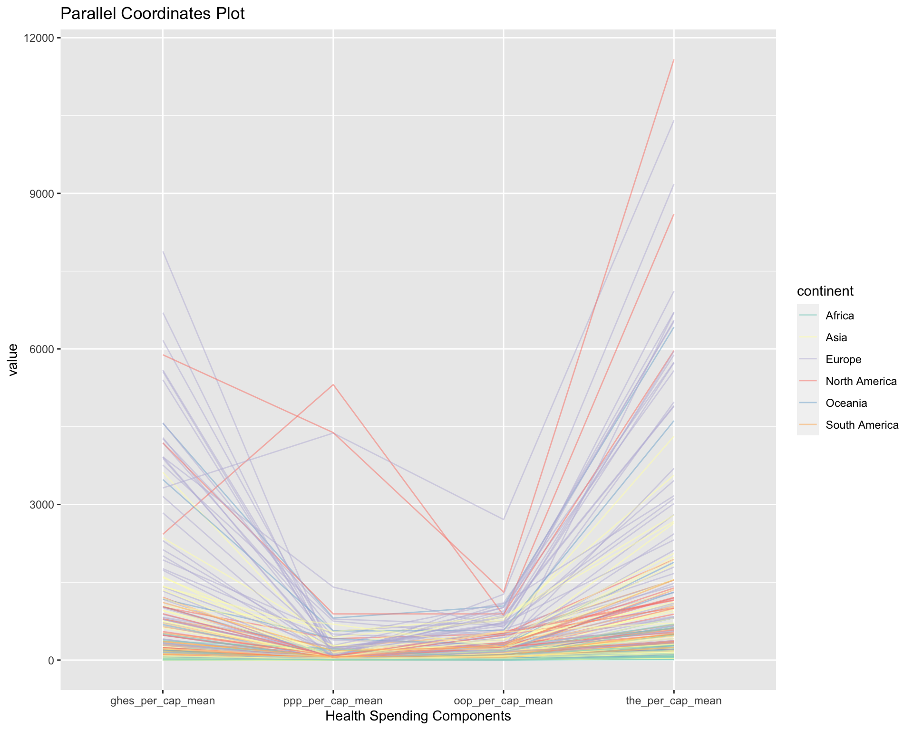

The exploration of global health expenditure spanning the years 1995 to 2019, using the extensive dataset from the Institute for Health Metrics and Evaluation (IHME), has uncovered intricate financial trends. The visualizations showcased below illuminate key patterns, shifts, and disparities in health expenditure over the past two and a half decades. These visuals not only capture the scale of financial investments in health across regions and nations but also spotlight the evolving priorities and challenges within the global health expenditure ecosystem. Whether examining trajectories of total expenditure or dissecting spending by specific expenditure sources, our visualizations aim to provide a comprehensive understanding of the economic dimensions of global health expenditure for the past two decades.
Throughout our analysis, unless explicitly stated, we consistently employed the average value per capita as a key metric. Our exploration encompassed not only overall health spending for each country but also delved into three distinct financing sources: Global Health Expenditure (GHES), Out-of-Pocket Health Expenditures (OOP), and Prepaid Private Health Expenditures (PPP). To narrow our focus, we strategically examined three primary groupings of countries: those classified under continents, the overarching category of individual countries, and income-based grouped countries. This multifaceted approach allowed us to uncover and present insights at various scales, providing a comprehensive understanding of global health expenditure dynamics. Moreover, several graphics feature an interactive element, allowing users to hover over data points and access additional information pertinent to the displayed data.
Analyzing Trends between 1995 and 2019 on a Macro Level
To start off, we wanted to start with a macro-level analysis, so we delve into the evolving trends in global health expenditure from 1995 to 2019 based on the country groupings that were provided in the dataset and shown in the graph.
Code
# Load necessary librarieslibrary(ggplot2)library(dplyr)library(tidyr)library(plotly)library(readr)# Read data from CSVdata <-read_csv("other_files/data.csv")# Convert 'year' to a factor to ensure proper ordering on the x-axisdata$year <-as.factor(data$year)# Specify the specific values of location_name you want to include in the plotselected_locations <-c("Central Europe, Eastern Europe, and Central Asia", "Latin America and Caribbean", "North Africa and Middle East", "South Asia", "Southeast Asia, East Asia, and Oceania","Sub-Saharan Africa")# Filter the dataframe based on the selected location namesfiltered_df <- data %>%filter(location_name %in% selected_locations) %>%select(year, location_name, ghes_per_cap_mean, ppp_per_cap_mean, oop_per_cap_mean) %>%gather(key ="Expenditure", value ="value", -year, -location_name)# Ensure that the 'value' column is numericfiltered_df <- filtered_df %>%mutate(value =as.numeric(value))# Plot: Health Expenditure Over Time for specific columns with facets and scaled y-axisplot <-ggplot(filtered_df, aes(x = year, y = value, group =interaction(Expenditure, location_name),color = Expenditure,text =paste("Location: ", location_name, "<br>","Year: ", year, "<br>","Expenditure: ", Expenditure, "<br>","Value: ", value))) +geom_line(size =1) +geom_point(size =1) +ggtitle("Domestic Financing Health Expenditure Over Time") +ylab("Health Expenditure Per Person") +facet_grid(location_name ~ ., scales ="free_y") +# Facet based on location and variabletheme_minimal() +theme(strip.text.y =element_text(angle =0, hjust =1, size =8),strip.background =element_blank(), # Remove strip backgroundaxis.text.x =element_text(angle =45, hjust =1),legend.position ="bottom",legend.title =element_blank())plotly_object <-ggplotly(plot) %>%layout(legend =list(orientation ="h", x =0.2, y =-0.2),margin =list(b =120, r =280),height =500) # Increase bottom and right margins# Show the Plotly objectplotly_object
Central Europe, Eastern Europe, and Central Asia exhibit an overall increase in all financing sources. Notably, Government Health Spending and Out-of-Pocket Health Spending experienced significance increases, overtaking the trajectory of Prepaid Private Health Spending. This dynamic is indicative of a robust and multifaceted approach to healthcare financing within this region, where both public and individual financial commitments have significantly grown.
In Latin American and Caribbean countries, all three expenditure categories witness an upward trajectory. However, the trajectory of Out-of-Pocket spending introduces a layer of complexity. The period until 2009 witnessed an ascent, followed by a subsequent decline. This peculiarity warrants a deeper investigation into the underlying factors, potentially unveiling shifts in healthcare policies, societal expectations, or economic fluctuations that have sculpted this distinctive pattern.
Similarly, North African and Middle Eastern countries showcase an upward trend in overall health expenditure, with Out-of-Pocket spending experiencing fluctuations, including a dip in 2012 and 2013. This distinct pattern deviates from the general trajectory observed in other regions, prompting further exploration into geopolitical and economic events that may have influenced the healthcare spending landscape within this region.
In general, South Asian countries uniquely feature Out-of-Pocket as the primary financing source, and while witnessing an ascent from 1995 to 2015, there is a gradual decline post-2015. This deviation from the norm invites contemplation on the regions evolving economic dynamics and healthcare policy paradigms.
Next, the graph below explores each grouping of health expenditure and shows how the spending for each region has changed from 1995 to 2019. Across the spectrum of countries and regions, the overarching trend delineates the ascendancy of Government Health Spending, marking a possible steadfast commitment to bolster public health initiatives. The discernible increase in this financing source could be indicative of a global prioritization of citizens well-being. Prepaid Private Health Spending consistently emerges as the least significant contributor across all country groupings, emphasizing its comparatively muted role in the grand scheme of health expenditure.
Code
# Load necessary librarieslibrary(ggplot2)library(dplyr)library(tidyr)library(plotly)# Read data from CSVdata <-read_csv("other_files/data.csv")# Convert 'year' to a factor to ensure proper ordering on the x-axisdata$year <-as.factor(data$year)# Specify the specific values of location_name you want to include in the plotselected_locations <-c("Central Europe, Eastern Europe, and Central Asia", "Latin America and Caribbean", "North Africa and Middle East", "South Asia", "Southeast Asia, East Asia, and Oceania","Sub-Saharan Africa")# Filter the dataframe based on the selected location namesfiltered_df <- data %>%filter(location_name %in% selected_locations) %>%select(year, location_name, ghes_per_cap_mean, ppp_per_cap_mean, oop_per_cap_mean) %>%gather(key ="variable", value ="value", -year, -location_name)# Ensure that the 'value' column is numericfiltered_df <- filtered_df %>%mutate(value =as.numeric(value))# Plot: Health Expenditure Over Time for specific columns with facetsggplot_object <-ggplot(filtered_df, aes(x = year, y = value, group =interaction(location_name, variable),color = location_name,text =paste("Location: ", location_name, "<br>","Year: ", year, "<br>","Variable: ", variable, "<br>","Value: ", value))) +geom_line(size =1) +geom_point(size =1) +ggtitle("Domestic Financing Health Expenditure Over Time") +xlab("Year") +ylab("Health Expenditure per Person") +facet_grid(variable ~ ., scales ="free") +# Facet based on variabletheme_minimal() +theme(strip.text.y =element_text(angle =0, hjust =1), axis.text.x =element_text(angle =45, hjust =1)) +labs(color ="Location")# Convert ggplot to Plotlyplotly_object <-ggplotly(ggplot_object)# Manually set legend position to bottomplotly_object <- plotly_object %>%layout(legend =list(orientation ="h", x =0, y =-0.1),margin =list(b =80, r =150), # Adjusted marginheight =700) # Increase height for better display# Show the Plotly objectplotly_object
Sub-Saharan Africa and South Asia consistently register as the groups of countries with the lowest health expenditure across all financing expenditures. This discovery could prompt contemplation on the intricate socioeconomic factors underlying these regions healthcare ecosystems, bringing forth questions about resource allocation, accessibility, and disparities in healthcare infrastructure.
Latin America and the Caribbean are a consistent front-runner, boasting the highest or one of the highest spending levels in each financing source. This observation prompts exploration into the driving forces propelling this sustained commitment, whether rooted in economic prosperity, robust healthcare policies, or societal expectations.
The most substantial surge in Government Health Spending and Out-of-Pocket financing was present in Southeast Asian, East Asian, and Oceania countries. This dynamic shift not only underscores a strategic reorientation of financial commitments but also prompts a closer examination of the region-specific factors catalyzing this pronounced ascent. Delving into these disparities opens avenues for a nuanced understanding of the diverse trajectories shaping healthcare financing on a global scale.
Regional/Income Disparities
Next, we want to explore the intricate patterns of global health expenditure per continent (manually assigned and can be found in DataCleanup.qmd file), offering a comprehensive exploration of the diverse economic landscapes shaping healthcare financing strategies from 1995 to 2019.
Code
# Load necessary librarieslibrary(ggplot2)library(dplyr)library(tidyr)selected_continents <-c("Africa", "Asia", "Europe", "North America", "Oceania", "South America") # Calculate the mean values for each variable within each continent and yearmean_data <- data %>%group_by(continent, year) %>%filter(continent %in% selected_continents) %>%summarize(ghes_total_mean =mean(ghes_per_cap_mean, na.rm =TRUE),ppp_total_mean =mean(ppp_per_cap_mean, na.rm =TRUE),oop_total_mean =mean(oop_per_cap_mean, na.rm =TRUE))# Reshape the data for plottingfiltered_data <- mean_data %>%gather(key ="variable", value ="value", -continent, -year)# Ensure that the 'value' column is numericfiltered_data <- filtered_data %>%mutate(value =as.numeric(value))# Create a stacked bar chartggplot_object <-ggplot(filtered_data, aes(x = year, y = value, fill = variable)) +geom_bar(stat ="identity", position ="stack") +ggtitle("Mean Health Spending by Continent and Year") +xlab("Year") +ylab("Mean Health Spending") +facet_wrap(~continent, scales ="free_y", ncol =1) +theme(axis.text.x =element_text(angle =45, hjust =1)) +theme_minimal() +labs(x ="Year") # Set x-axis titleggplot_object
The graph above casts a revealing spotlight on diverse patterns in health expenditure across continents. What constantly persists is that the government remains the primary financier accross the global, regardless of year.
Upon closer examination, notable differences in spending levels among continents become evident. Europe, North America, and Oceania emerge as exhibiting the highest health expenditure, while Africa, in contrast, grapples with a health spending allocation nearly half of the global average. This divergence opens the floor to further exploration into the underlying factors behind such pronounced variations, invoking considerations of economic prowess, healthcare infrastructure, and socio-economic determinants unique to each continent.
With this broad lens on health expenditure, we then wanted to explore income class differentials. The subsequent graph encapsulates the average values across all years, facilitating in understanding the relationship between income class and health expenditure.
Code
# Load necessary librarieslibrary(dplyr)library(ggplot2)library(plotly)# Visualization 2019 health spending per low-middle-high income country# Filter only on continentsdesired_locations <-c("Low income","Lower-middle income","Upper-middle income","High income")# Filter data based on location_name and select relevant columnsfiltered_data <- data %>%filter(location_name %in% desired_locations) %>%select(year, location_name, ghes_per_cap_mean, oop_per_cap_mean, ppp_per_cap_mean)# Define the order of facetsfacet_order <-c("Low income", "Lower-middle income", "Upper-middle income", "High income")# Convert 'location_name' to factor with specified orderfiltered_data$location_name <-factor(filtered_data$location_name, levels = facet_order)# Reshape data for better plottingreshaped_data <- tidyr::pivot_longer(filtered_data, cols =c(ghes_per_cap_mean, oop_per_cap_mean, ppp_per_cap_mean), names_to ="Spending_Source", values_to ="Health_Expenditure")# Visualization 2019 health spending per low-middle-high income countryp <-ggplot(data = reshaped_data, mapping =aes(x = Spending_Source, y = Health_Expenditure/100, fill = Spending_Source)) +geom_col(position ="dodge") +facet_wrap(~ location_name, scales ="free_y", nrow =1, drop =TRUE, dir ="h", strip.position ="bottom") +labs(title ="Health Spending by Financing Source in 2019",subtitle ="Per Continent",x ="Spending Source", y ="Health Expenditure (in Hundreds)", fill ="Spending Source") +theme(axis.text.x =element_blank(),legend.position ="bottom",legend.direction ="horizontal")# Convert ggplot to plotlyp_plotly <-ggplotly(p) %>%layout(legend =list(orientation ="h", x =0, y =-0.1),title ="",margin =list(b =120, r =50),height =500) # Increase bottom and right margins# Print the plotly objectp_plotly
The visual provides a compelling insight into the dynamics of health expenditure as countries ascend through income classes. Notably, it reveals a discernible trend where government health expenditure and private health expenditures exhibit a positive correlation with income class. As countries progress into higher income classes, there is an increase in both government health expenditure and per capita PPP. This phenomenon suggests that wealthier nations tend to allocate more financial resources to their public health systems, potentially reflecting a commitment to providing comprehensive healthcare services supported by increased fiscal capacity. Conversely, a noteworthy observation is the inverse relationship seen in out-of-pocket (OOP) health expenditure. The visual illustrates a consistent decrease in OOP expenditures as countries move up the income ladder. This decline in OOP expenditure is significant, as it indicates a reduced reliance on individual OOP contributions for healthcare expenses in wealthier nations. This shift may signify enhanced social protection, improved access to health insurance, and greater government responsibility for financing healthcare services, contributing to a more equitable and sustainable healthcare system.This nuanced understanding can inform global health policy discussions and strategies aimed at fostering more inclusive and robust healthcare systems worldwide.
Based on the previous visualizations, we saw that South Asia and Sub-Saharan Africa countries seem to spend significantly less per person on health spending, which is also what is observed in this graph, in terms of total health expenditure per person. It seems that there was also not a significant increase in spending over time for those two groups of countries. Based on this graph, it can also be observed that the two largest increase in total health spending is in Southeast Asian, East Asian, and Oceanian countries and Central European, Eastern European, and Central Asian countries.
In summary, the visualizations offer a comprehensive exploration of health expenditure dynamics from 1995 to 2019. The initial graph underscores a consistent upward trajectory in Government Health spending, outpacing other sources, with Prepaid Private Health Spending consistently ranking lowest. Region-specific analyses reveal distinct patterns, such as significant increases in Central Europe, Eastern Europe, and Central Asia, while South Asian countries uniquely rely on Out of Pocket financing. The second graph highlights persistent variations, with Sub-Saharan Africa and South Asia consistently exhibiting the lowest spending and Latin America and the Caribbean often showing the highest across all financing types. Notably, Southeast Asian, East Asian, and Oceanian countries experience substantial increases in Government Health Spending and Out of Pocket financing. Lastly, the third graph reaffirms lower total health expenditure per person in South Asia and Sub-Saharan Africa, suggesting limited growth. Conversely, Southeast Asian, East Asian, and Oceanian countries, along with Central European, Eastern European, and Central Asian countries, witness significant increases, spotlighting regional disparities in global health expenditure trends.
Global Health Expenditure in 2019
By zeroing in on the 2019 data of global health expenditure, we gather information that defines the healthcare landscape with the most recent data that is provided to us. This focused lens enables a nuanced analysis, unraveling the intricate trends, disparities, and transformative shifts within Government Health Spending, Out of Pocket Health Spending, and Prepaid Private Health Spending across diverse regions. The specificity of the 2019 snapshot serves as a means to capture the essence of global health expenditures priorities, allocation patterns, and overarching dynamics of global health expenditures in this day and age.
This exploration of the financial landscape in 2019 not only discerns immediate trends but also acts as a strategic compass for anticipating future trajectories. These next visualizations offer a snapshot of where global health expenditure is currently, fostering a deeper understanding of the intricate dance between financial resources and healthcare outcomes.
Taking a look at a parallel coordinates plot for the year 2019 adds an extra layer of analysis. This visual narrative encapsulates the interplay between Government Health Spending, Out of Pocket Health Expenditure, and Prepaid Private Health Expenditure, as well as Total Health Expenditure.
Code
# Assuming your data frame is named 'data'# Filter data for the year 2019 and remove rows with missing valuesfiltered_data <- data %>%filter(year ==2019, !is.na(ghes_total_mean), !is.na(ppp_total_mean), !is.na(oop_total_mean), continent !="Unknown")# Reshape the data for parallel coordinate plotmelted_data <- filtered_data %>%select(location_name, ghes_per_cap_mean, ppp_per_cap_mean, oop_per_cap_mean, the_per_cap_mean, continent)# Load necessary librarieslibrary(GGally)# Create a parallel coordinates plotplot <- GGally::ggparcoord( melted_data,columns =2:5,groupColumn ="continent",scale ="globalminmax",showPoints =FALSE,alphaLines =0.5)# Customize the plot further if needed (e.g., add color)plot +scale_color_brewer(palette ="Set3") +labs(title ="Parallel Coordinates Plot",x ="Health Spending Components")

Code
#y = "Countries")
Examining the parallel coordinates plot reveals distinctive patterns within the three major categories of global health expenditure in 2019. Notably, Government Health Spending exhibits considerable variation, signifying diverse fiscal approaches among nations. In contrast, Private Health Spending and Out Of Pocket Health Spending showcase more consistent levels, with minimal variability despite a few outliers. This suggests a relative stability in financial allocations for these specific health expenditure types. The overarching dispersion observed in total health spending reiterates the wide-ranging financial commitments across nations, echoing the complexities of global healthcare financing.
Transitioning to the Cleveland dot plot introduces a representation of health expenditure levels across a multitude of countries. This visualization serves as an accessible and informative tool, offering a snapshot of the distribution of healthcare expenditure within each country.
Code
library(readr)library(dplyr)library(ggplot2)library(tidyr)library(RColorBrewer)library(forcats)# Filter dataset on continentsselected_regions <-c("Central Europe, Eastern Europe, and Central Asia","Latin America and Caribbean","North Africa and Middle East","South Asia","Southeast Asia, East Asia, and Oceania","Sub-Saharan Africa", "High income","Low income","Lower-middle income","Upper-middle income","High-income")continents_1995_2019 <- data %>%filter(location_name %in% selected_regions)## Year 2019health_spending_2019 <- data %>%filter(year ==2019)## Filter on only countries and necessary columnscountries_2019 <- health_spending_2019 %>%filter(!(location_name %in% selected_regions | location_name =="Global")) %>%select(location_name, location_id, 'the_per_cap_mean', 'ghes_per_cap_mean', 'oop_per_cap_mean', 'ppp_per_cap_mean')## Do pivot_longer on datapivot_longer_data <- countries_2019 %>%pivot_longer(cols =c( 'the_per_cap_mean', 'ghes_per_cap_mean', 'oop_per_cap_mean', 'ppp_per_cap_mean'), names_to ="Spending_Source", values_to ="Health_Expenditure")# Create Cleveland dot plotggplot(pivot_longer_data, aes(x = Health_Expenditure, y =fct_reorder(location_name, Health_Expenditure, .desc =FALSE), color = Spending_Source)) +geom_point() +ggtitle("Financing Sources Countries in 2019") +ylab("") +scale_x_log10() +# Add this line for logarithmic scale on the x-axistheme_minimal() +labs(title ="Health Spending by Financing Source in 2019",subtitle ="Per Country",x ="Health Expenditure", y ="Countries", fill ="Spending Source")
The insights derived from the cleveland dot plot are crucial for unraveling the intricate dynamics of global health expenditure. Notably, a trend emerges as countries with elevated total health spending consistently exhibit substantial contributions from Government Health Spending. This correlation suggests a direct relationship between total health expenditure and the magnitude of government financial allocations, emphasizing the pivotal role of public funding in driving higher overall health spending.
However, as the total health expenditure decreases, an intriguing divergence emerges, indicating increased variability in the highest expenditure category. This nuanced observation prompts a closer examination of the contributing factors to health spending variations in countries with lower overall financial commitments. Such disparities underscore the multifaceted nature of global health financing, where the determinants of expenditure become more diverse as the total spending decreases.
Despite the prevailing pattern of Government Health Expenditure dominating the highest expenditure category for a significant number of countries, anomalies surface in the data. In specific instances, Out-Of-Pocket health spending surpasses government allocations, challenging the conventional narrative. This anomaly prompts an exploration into the unique circumstances and contributing factors behind these deviations, unveiling potential outliers or outliers clusters. This detailed analysis serves as a foundation for a more nuanced understanding of the complexities surrounding health expenditure distribution and identifies countries warranting further investigation to unravel the intricacies of their financial health landscape.
Code
library(plotly)library(dplyr)# Create bar plot databar_plot_data <- health_spending_2019 %>%filter(oop_per_cap_mean > ghes_per_cap_mean, continent !="Unknown") %>%group_by(location_name, continent) %>%summarize(Count =n(), countries =paste(location_name, collapse =", "))# Create Plotly bar plotplot_ly(bar_plot_data, x =~fct_reorder(continent, Count), y =~Count, type ="bar",hoverinfo ="text",hovertemplate =~paste("<br>Country: ", countries)) %>%layout(title ="Count of Countries Where OOP_per_cap_mean > GHES_per_cap_mean",xaxis =list(title ="Continent"),yaxis =list(title ="Count of Countries"),hoverlabel =list(bgcolor ="white", font =list(family ="Arial", size =12)),barmode ="stack")
The bar graph provides a nuanced perspective on the occurrence of countries where Out-Of-Pocket health spending surpasses government allocations, highlighting that this phenomenon, while not highly prevalent, is discernible across all continents except for South America. This raises intriguing questions about the underlying factors contributing to such variations, necessitating the expertise of regional specialists to provide comprehensive insights. Engaging domain experts would be instrumental in unraveling the complex interplay of economic, cultural, and systemic dynamics that might underpin these unique financing patterns.
Transitioning to the boxplot depicting the distribution of health spending per person by continent for each year, this visualization serves as a comprehensive narrative of the diverse financial landscapes in healthcare across the globe. The boxplot captures the variability, trends, and central tendencies in health expenditure over the years, offering a visual journey through the dynamic nature of healthcare financing on a continent-wise basis. This visualization acts as a valuable tool for policymakers, researchers, and stakeholders to glean insights into the intricate patterns of health spending and make informed decisions that cater to the specific needs and challenges of each continent.
Code
library(plotly)library(dplyr)# Create bar plot databar_plot_data <- health_spending_2019 %>%filter(ppp_per_cap_mean ==0, continent !="Unknown") %>%group_by(location_name, continent) %>%summarize(Count =n(), countries =paste(location_name, collapse =", "))# Create Plotly bar plotplot_ly(bar_plot_data, x =~fct_reorder(continent, Count), y =~Count, type ="bar",hoverinfo ="text",hovertemplate =~paste("<br>Country: ", countries)) %>%layout(title ="Count of Countries Where PPP is 0",xaxis =list(title ="Continent"),yaxis =list(title ="Count of Countries"),hoverlabel =list(bgcolor ="white", font =list(family ="Arial", size =12)),barmode ="stack")
The revelations drawn from the bar chart offer a compelling narrative about the distinct financial landscapes of various continents, particularly in Africa and Asia. The notable occurrence of countries in these regions where Out-Of-Pocket health spending surpasses government allocations signifies a distinctive pattern. The prevalence of this phenomenon suggests a unique financial structure, possibly influenced by economic, cultural, or systemic factors inherent to these continents.
Shifting focus to the Cleveland dot plot, the observation of countries with Prepaid Private Health Spending (PPP) registering as 0 unveils another layer of complexity in the global health expenditure landscape. This anomaly prompts a specific inquiry into the continent that exhibits a predominant trend of zero PPP values.
Code
# Load necessary librarieslibrary(dplyr)library(tidyr)library(plotly)# Assuming your data frame is named 'data'# Convert 'year' to a factor to ensure proper ordering on the x-axisdata$year <-as.factor(data$year)# Specify the selected continentsselected_continents <-c("Africa", "Asia", "Europe", "North America", "Oceania", "South America")selected_year <-c("2019")# Filter data for selected continentsfiltered_data <- data %>%filter(continent %in% selected_continents) %>%filter(year %in% selected_year)# Create a boxplot for the distribution of health spending by continent for each year using Plotlyplotly_object <-plot_ly(data = filtered_data, x =~continent, y =~the_per_cap_ppp_mean,type ="box",animation_frame =~year,text =~paste("Continent: ", continent, "<br>Location: ", location_name, "<br>Year: ", year, "<br>Value: ", the_per_cap_ppp_mean),hoverinfo ="text") %>%layout(title ="Distribution of Health Spending Per Person by Continent for Each Year",xaxis =list(title ="Continent"),yaxis =list(title ="Health Spending"),hoverlabel =list(bgcolor ="white", font =list(family ="Arial", size =12)))# Show the Plotly objectplotly_object
The boxplots for total health expenditure per person by continent in 2019 reveal compelling insights into the global healthcare landscape. Europe emerges as the continent with the highest median total health expenditure, underscoring its robust investment in healthcare resources. Following closely are North America, South America, Asia, and Oceania, while Africa exhibits the lowest median total health expenditure. The considerable dispersion in Europes health spending suggests a wide range of financial commitments across countries, indicative of diverse healthcare systems and funding structures.
A notable highlight is the presence of outliers, with the United States standing out as the country with the highest health expenditure globally, nearing $12,000 per person. This substantial outlier emphasizes the unique healthcare spending patterns in the U.S., contributing significantly to the observed dispersion in Europe.
Moving forward, the subsequent graph delves into a detailed exploration of total health expenditure for each country within each continent. This visualization offers a granular perspective, enabling a comparative analysis of spending levels among countries within the same continent. The inclusion of individual country data facilitates a more nuanced understanding of the factors influencing health expenditure and highlights potential outliers that warrant further investigation.
Code
# Load necessary librarieslibrary(dplyr)library(ggplot2)library(plotly)# Assuming your data frame is named 'data'# Convert 'year' to a factor to ensure proper ordering on the x-axis# data$year <- as.factor(data$year)# Filter data for the year 2019, remove rows with missing the_total_mean, and exclude "Unknown" continentfiltered_data <- data %>%filter(year ==2019, !is.na(the_total_mean), continent !="Unknown")# Check if there are valid faceting variablesvalid_faceting <- filtered_data %>%group_by(continent) %>%summarise(n =n()) %>%filter(n >0)# If there are valid faceting variables, create the bar graph with facet_wrapp <-ggplot(filtered_data, aes(x = the_per_cap_ppp_mean, y = location_name, fill = continent)) +geom_col(position ="dodge") +ggtitle("Total Mean Health Spending by Country in 2019") +ylab("Country") +xlab("Total Mean Health Spending per Person") +facet_wrap(~continent, scales ="free_y", ncol=2) +# Adjust facet_wrap for horizontal bar graphtheme_minimal() +theme(axis.text.y =element_text(angle =0, hjust =1)) # Adjust axis text for better readabilityp_plotly <-ggplotly(p) %>%layout(legend =list(orientation ="h",x =0.1, y =-0.05),title ="",height =1600) # Increase bottom and right marginsp_plotly
In conclusion, our comprehensive analysis of global health expenditure has provided valuable insights into the intricate dynamics of healthcare financing across continents and over time. Beginning with a macro-level exploration, our visualizations elucidated trends, disparities, and shifts in Government Health Spending, Out of Pocket Health Spending, and Prepaid Private Health Spending from 1995 to 2019. Notably, Government Health Spending emerged as a predominant contributor to health expenditure across all continents, while variations in spending levels were observed.
Further investigations into income class disparities revealed nuanced distinctions, with Europe, North America, and Oceania consistently exhibiting higher health spending compared to Africa and South Asia. The focus on the year 2019 allowed for a detailed examination of total health expenditure, with Europe leading in median spending, though the United States stood out as a significant outlier with the highest spending globally.
Exploring specific financing sources, our visualizations identified anomalies such as countries where Out-of-Pocket spending surpassed Government Health Spending, predominantly in Africa and Asia. The prevalence of countries with zero Prepaid Private Health Spending raised questions requiring domain expertise for a deeper understanding.
Incorporating diverse visualization techniques, including parallel coordinates plots, Cleveland dot plots, bar charts, and boxplots, facilitated a holistic comprehension of health spending patterns. Notably, Europes wide dispersion and the United States outlier status underscore the complexity of healthcare financing.
These visualizations collectively contribute to a nuanced understanding of global health expenditure, enabling policymakers, researchers, and healthcare professionals to make informed decisions. The granular insights into spending patterns, outliers, and regional disparities pave the way for targeted interventions, strategic planning, and the formulation of evidence-based policies in the realm of global health.